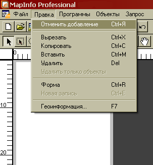
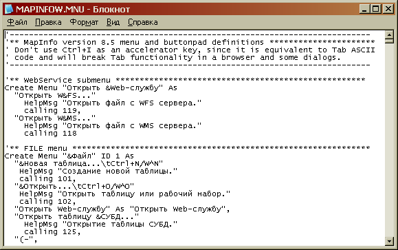
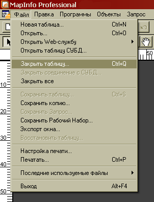

«Горячие» клавиши в MapInfo Professional
- Введение
- Работа с программой
- Работа с файлами
- Навигация по окнам
- Редактирование
- Работа в окне Карты
- Работа в окне Списка
- Работа с объектами
- Работа с запросами
- Опции и настройки
- Пользовательские настройки
Введение
«Горячие» клавиши, или «hot key» — это нажатие одной или нескольких клавиш на клавиатуре для выполнения определённой команды, запрограммированной на вызов по нажатии этого сочетания. Использование сочетаний клавиш значительно ускоряет работу и увеличивает количество возможных действий, выполняемых с помощью клавиатуры.
В MapInfo Professional большинство сочетаний клавиш дублируют пункты меню и вынесены справа от подписи меню.
Вместе с тем, некоторые возможности программы неявны и практически нигде не описаны. Клавиатурные сочетания, позволяющие изменять масштаб изображения, порядок окон и даже местоположение объекта, скрыты в глубинах справки MapInfo или Руководства Пользователя.
Приведенная ниже таблица «горячих» клавиш MapInfo ни в коем случае не претендует на абсолютную полноту и достоверность. Однако даже такая подборка может существенно облегчить использование программы.
| Сочетание клавиш | Выполняемое действие | |
Работа с программой |
||
| Alt | F4 | Завершение работы MapInfo |
| F1 | Справочник MapInfo Professional | |
Работа с файлами |
||
| Alt | F5 | Обновить таблицу WFS |
| Ctrl | N | Создание новой таблицы |
| Ctrl | O | Открыть таблицу или рабочий набор |
| Ctrl | P | Печать содержимого окна |
| Ctrl | S | Сохранение изменений в таблице |
| Ctrl | U | Запуск программы MapBasic |
Навигация по окнам |
||
| Alt | Left Arrow | Показ предыдущего представления карты или отчета |
| Ctrl | Tab | Переход к следующему открытому окну MapInfo |
| Ctrl | F4 | Закрывает активное окно |
| Ctrl | F6 | Переход к следующему окну |
| Ctrl | D | Перерисовка активного окна |
| Shift | F4 | Расположить все открытые окна рядом |
| Shift | F5 | Расположить все открытые окна каскадом |
| F2 | Представление данных в новом окне списка | |
| F3 | Представление данных в новом окне карты | |
| F4 | Построение графика | |
| F5 | Создание нового окна Отчета | |
Редактирование |
||
| Ctrl | C | Копирование выбранных объектов в буфер обмена |
| Ctrl | H | Удаление выбранных объектов |
| Ctrl | V | Вставка буфера обмена в активное окно |
| Ctrl | X | Перемещение выбранных объектов в буфер обмена |
| Ctrl | Z | Отмена последнего изменения |
| BackSpace / Delete | Удаление выбранных объектов | |
Работа в окне Карты |
||
| Alt | F9 | Изменение режимов и цветов существующей тематической карты |
| Ctrl | L | Диалог «Управление слоями» |
| F9 | Создание тематической карты согласно заданным условиям | |
| F10 | Создать карту-призму, используя текущее окно карты | |
| F11 | Создать 3D-карту, используя слой поверхности и текущую карту | |
Работа в окне Списка |
||
| Ctrl | E | Добавление новой записи в активное окно списка |
| Ctrl | End | Переход к последней записи активного списка |
| Ctrl | Home | Переход к первой записи активного списка |
| Ctrl | I | Переход к следующей записи в окне активного списка |
| Tab / Shift Tab | Переход по строкам активного списка | |
Работа с объектами |
||
| Ctrl | ArrowKeys | Перемещение выделенных объектов в окне карты или отчета |
| Ctrl | Del | Отмена выбора изменяемого объекта |
| Ctrl | T | Выбор изменяемого объекта |
| Ctrl | W | Отмена выбора объектов |
Работа с запросами |
||
| Ctrl | A | Найти выборку во всех открытых окнах |
| Ctrl | F | Поиск и выделение объектов (диалог «Найти») |
| Ctrl | G | Найти выборку в активном окне |
| F7 | Отображение географической информации о выбранном объекте | |
Опции и настройки |
||
| Alt | F8 | Диалог «Стиль символа» |
| Ctrl | F8 | Диалог «Стиль региона» |
| Shift | F8 | Диалог «Стиль линии» |
| F8 | Диалог «Стиль текста» | |
| - / + | Масштабирование окна карты или отчета | |
| 1, 2, (…) 9 | Масштабирование окна отчета | |
| Ctrl | R | Изменение режима работы с формой объекта |
| C | Переключение режима отображения курсора | |
| N | Изменение режима свободного рисования | |
| S | Изменение режима привязки узлов | |
| T | Изменение режима автотрассировки | |
Пользовательские настройки
Также, в дополнение к перечисленным выше стандартным клавиатурным сочетаниям, в MapInfo Professional существует неявная возможность задавать собственные «горячие» клавиши.
Для того чтобы задать ту или иную пользовательскую комбинацию или изменить существующую, необходимо открыть в текстовом редакторе файл MAPINFOW.MNU, расположенный в корневой папке программы {UserPath}\MapInfo\Professional\
В этом файле, представляющем, по сути, код на языке MapBasic, задаются все пункты меню программы. О синтаксисе команды Create Menu можно детально прочитать в Руководство пользователя MapBasic. Не вдаваясь в подробности, следующие строки создают пункт меню «Новая таблица» и задает «горячую» клавишу Ctrl+N для вызова соответствующего диалога:
"&Новая таблица…\tCtrl+N/W^N" HelpMsg "Создание новой таблицы." calling 101
Клавиатурные сочетания, как можно видеть, задаются в строке с текстом пункта меню. Вначале, отделяясь от основного текста символом табуляции (\t), что позволяет выровнять hotkey по правому краю, задается отображаемая совместно с текстом расшифровка клавиш (Ctrl+N). Затем, через символ /W задается собственно комбинация «горячих» клавиш. При этом используются следующие коды клавиш:
| Символ | Клавиша |
| ^ | Ctrl |
| # | Shift |
| @ | Alt |
| %112 | F1 |
| %113 | F2 |
| … | |
| %123 | F12 |
Клавиши букв алфавита, цифры и символы задаются соответствующими им латинскими подписями клавиш. Так, клавиша с буквой I или Ш задается комбинацией I или i (регистр не имеет значения).
Для иллюстрации применения этой возможности MapInfo, добавим новую «горячую» клавишу в файл MAPINFOW.MNU.
Исходная строка:
"(З&акрыть таблицу… " HelpMsg "Закрыть таблицу." calling 103,
Модифицированная строка:
"(З&акрыть таблицу…\tCtrl+Q/W^Q" HelpMsg "Закрыть таблицу." calling 103,
Т.е. в пункт меню «Закрыть таблицу» добавлена клавиатурная комбинация Ctl+Q, которая, по нажатию, вызовет диалог закрытия таблицы.
